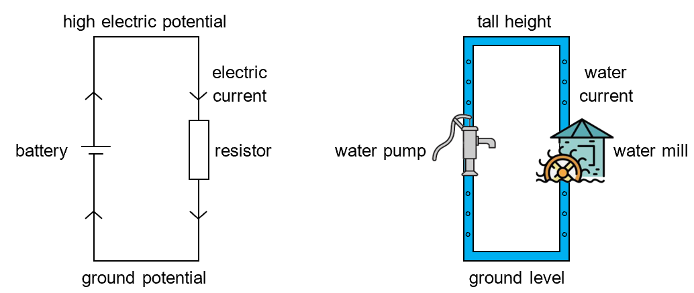
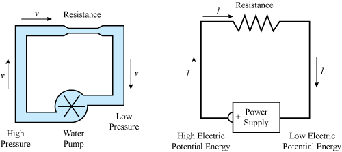
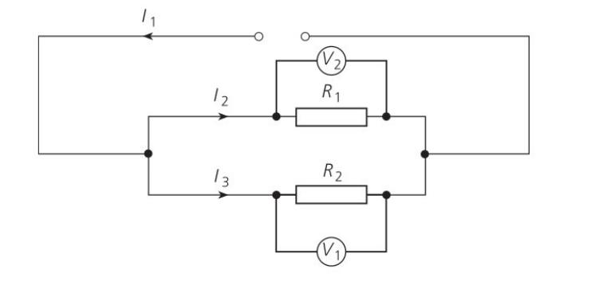

### 8.1 ELECTRICITY: Electric Charge
* An electric charge is like *a little droplet of electricity*
* There are **positive** and **negative** charges
* Like charges repel and unlike charges attract
* The electric charge has the symbol $Q$
* the SI unit of charge is $1\\; C$ (one coulomb)
* A body has a charge of $1 \\;C$ if it has an electron excess of $6.24 \times 10^{18}$ electrons.
8.1 ELECTRICITY: Electric Charge
Question: Where do charges come from?
Positive charge comes from (heavy) protons and negative charge comes from (mobile) electrons.
### 8.1 ELECTRICITY: Electric Charge
##### The Sweater and Balloon Experiment
[https://issr.edu.kh/science/Webpage/phet/balloons-and-static-electricity_en.html](https://issr.edu.kh/science/Webpage/phet/balloons-and-static-electricity_en.html)
* If you rub a balloon on clothes, it becomes charged with static electricity.
* Electrons are transferred to the balloon and it becomes negatively charged
* The negatively charged Balloon sticks to the wall: it repels the electrons and is then attracted to the positive charge
### 8.1 ELECTRICITY: Electric Charge
* Some materials have their electrons knocked off more easily than others, these are known as **conductors**
* Other materials tightly grip on to their electrons and don't let go. These are called **insulators**
* Some materials have properties in between a conductor and an insulator. These materials are known as **semi-conductors**.
Good conductors like copper have electrons that easily move through their structures, while insulators do not have mobile charged particles.
### 8.2 ELECTRICITY: Electric Charge
* The ground below our feet may be thought of as a good conductor
* It has an infinite capacity and supply for electrons
* When you want to safely discharge a charged body
* you connect it to the ground
* the electrons flow between the ground and the body cancelling the charge
* This process is called *Earthing*.
### 8.2 ELECTRICITY: Electric Charge
* You can get a static charge on an object in 3 ways:
* **Friction:** When two different insulating materials are rubbed, electrons get transferred from one body to another. e.g. a sweater and balloon
* **Conduction:** charging an uncharged material by bringing it into touch with some other charged material.
* **Induction:** charging without any actual contact with a charged body.
The field lines are in the direction a small positive test charge will move towards the body.
This is just convention.
8.3 ELECTRICITY: Electric Fields
8.3 ELECTRICITY: Electric Fields
### 8.4 ELECTRICITY: Current in a simple circuit
* An electric current is a steady flow of electrons in a particular direction.
* If charges are like droplets, then a current is a like a stream
* The SI unit of current is the Ampere ($A$).
> **Definition of Current:** An electric current is defined as the charge passing a point per unit time
### 8.4 ELECTRICITY: Current in a simple circuit
> $$ \text{current} = \frac{\text{charge}}{\text{time}}$$
> or
> $$ I = \frac{Q}{t}$$
$1 \\;A$ is the current when $1\\;C$ of charge moves across a point in $1$ second.
### 8.4 ELECTRICITY: Current in a simple circuit
**Question:** What is the definition of $1\\;C$?
$1\\;C$ is defined in terms of current using the equation $Q = I \times t$.
This is done because current is much more frequently used in engineering than static charge.
$1\\;C$ is the amount of charge passing a point over $1\\;s$ in a circuit with $1\\;A$ of current.
8.4 ELECTRICITY: Current in a simple circuit
Electrons flow from the negative terminal of the cell to the positive
Current flows from the positive terminal to the negative terminal. This is just convention.
### 8.4 ELECTRICITY: Current in a simple circuit
**Workbook 8.4, 1.c.i**
A current of $2.0A$ flows in a circuit. How much charge passes a point in the circuit in $10s$?
**Workbook 8.4, 1.c.ii**
Calculate the charge passing a point in a circuit in $3s$ if the current flowing is $10mA$.
**Workbook 8.4, 1.c.iii**
How much charge passes a point in a circuit in $30$ minutes if the current flowing is $0.05A$?
### 8.4 ELECTRICITY: Current in a simple circuit
**Workbook 8.4, 1.c.iv**
How much current is flowing in a circuit if $120C$ of charge passes a point in $1$ minute?
**Workbook 8.4, 1.c.v**
What is the current flowing in a circuit if $18mC$ pass a point in $6$ seconds?
**Workbook 8.4, 1.d**
A student is tring to understand current flow. She cannot work out why there is no delay between closing a switch in a circuit and the bulb lighting. Write an explanation to help her understand why the bulb lights immediately.
8.5 ELECTRICITY: Potential Difference
Rivers flow from the mountains to the sea under the effect of gravity.
To be more precise, water in rivers flow from an area of higher potential energy to an area of lower potential energy.
8.5 ELECTRICITY: Potential Difference
The flowing water in rivers have kinetic energy, what we experience as water pressure
A water wheel consumes the kinetic energy of flowing water to do useful work
### 8.5 ELECTRICITY: Potential Difference
* **Potential Difference** or **Voltage** is a measure of how much energy is transferred from electrical charges to the components of the circuit.
* The SI Unit of potential difference is **Volts** ($V$)
* Potential difference in an electric circuit is like pressure difference in water
Without voltage, free electrons move around randomly. With voltage, all the free electrons move in the same direction, causing current.
> **Definition of Potential Difference:** Potential difference is the work done by a unit charge passing through a component.
### 8.5 ELECTRICITY: Potential Difference
> $$ \text{Potential Difference} = \frac{\text{Work Done}}{\text{Charge}}$$
> or
> $$ V = \frac{W}{Q}$$
A potential difference of $1\\;V$ between two points means that $1\\;J$ of energy is transferred to/from $1\\;C$ of charge moving between the two points
Cells or batteries add energy to the electrical charge, but most other components of a circuit take energy from the electrical charge.

8.5 ELECTRICITY: Potential Difference
Before a dam is opened, water accumulates to the maximum possible amount. All this water builds up potential energy waiting to do work once the dam is released.
Similarly, a cell which is not connected is waiting to do work. It builds up all its energy as potential.
### 8.5 ELECTRICITY: Potential Difference
* The potential difference across a cell is highest when it isn't connected in a circuit. This maximum potential difference is called the **electromotive force** (**emf**) of the cell
* The emf is measured in Volts (because it is stored up potential difference)
> **Definition of emf:** The emf is the work done per unit charge by the cell to drive charge around a complete circuit (including the cell)
Potential Difference is measured in a circuit using a Voltmeter
Note: A voltmeter is connected in parallel.
### 8.5 ELECTRICITY: Potential Difference
**Workbook 8.5, 1.b**
Three cells each of e.m.f. $1.5V$ are joined in series as shown. What is the total e.m.f. that they can supply?
**Workbook 8.5, 1.c**
In the space below, draw a circuit containing three identical bulbs in series and a batter of $6V$. Indicate the potential difference across each bulb.
**Workbook 8.5, 2 (Extension)**
What is the effect of adding cells in parallel on the potential difference and current in a circuit?
### 8.6, 8.7 ELECTRICITY: Resistance
* Electrical resistance is a measure of how difficult it is to pass an electric current through something.
* The SI Unit of resistance is the **ohm** ($\Omega$)
* For example:
* Copper has a low resistance since it has a loose hold on its electrons
* Nichrome has a higher resistance than copper so less current flows for the same voltage.
### 8.6, 8.7 ELECTRICITY: Resistance
* The resistance of a component may change for a number of different reasons.
* Length
* Cross-sectional area
* Temperature
* A component which is designed to have a certain resistance is called a **resistor**.
* A resistor uses the energy in the electrons flowing across it to do the work of *heating up*.
8.6, 8.7 ELECTRICITY: Resistance
### 8.6, 8.7 ELECTRICITY: Resistance
* For a constant potential difference: more resistance means less current
* For a constant resistance: more potential difference means more current
* For most metal conductors:
> The current is proportional to the potential difference
* This is known as **Ohm's Law**
* Ohm's Law is not true for all materials. It holds for most metal conductors.
8.6, 8.7 ELECTRICITY: Resistance
### 8.6, 8.7 ELECTRICITY: Resistance
> $$ \text{resistance} = \frac{\text{potential difference}}{\text{current}}$$
> or
> $$ R = \frac{V}{I}$$
**Note:** $1 \\; \Omega$ is defined as the resistance of an object when a current of $1\\;A$ flows through it when it has a potential difference of $1$ Volt.
8.6, 8.7 ELECTRICITY: Resistance

A water system vs an electrical circuit
8.6, 8.7 ELECTRICITY: Resistance
A setup to measure resistance.
Vary the voltage and measure the current.
8.6, 8.7 ELECTRICITY: Resistance
Another setup to measure resistance.
Vary the resistance and measure the current across the component.
8.6, 8.7 ELECTRICITY: Resistance
8.6, 8.7 ELECTRICITY: Resistance
8.6, 8.7 ELECTRICITY: Resistance
### 8.6, 8.7 ELECTRICITY: Resistance
**Workbook 8.7, 1.d**
i. What is the potential difference across a $6 \Omega$ resistor when a current of $3A$ flows through the resistor?
ii. What is the value of a resistor if a potential difference of $12V$ causes a current of $0.5A$ to flow through it?
iii. How much current flows through a $10k\Omega$ resistor when there is a potential difference of $6V$ across the resistor?
Good conductors have relatively low resistivities.
Good insulators have relatively high resistivities.
### 8.8: More about resistance factors
* **Question:** A copper wire has a diameter of $0.50 \\;mm$, a length of $1 \\;km$ and a resistance of $84\\;\Omega$.
* Calculate the resistance of a wire of the same material and diameter with a length of $500\\;m$.
* Calculate the resistance of a wire of the same material with a diameter of $1.0\\;mm$ and a length of $1\\;km$.
### 8.12: Electrical Energy and Power
##### Recap of Energy and Power
* **Energy** is the capacity to do work.
* The SI Unit of energy is the **Joule** ($J$)
> **In mechanical systems:** $1\\;J$ is defined the energy required to move a body $1\\;m$ with a $1\\;N$ force.
* **Law of conservation of energy:** Energy can neither be created nor destroyed, and it can only be transformed from one form to another.
**Question:** The SI unit of work and energy are the same. Why?
### 8.12: Electrical Energy and Power
##### Recap of Energy and Power
* Power is the rate at which work is done.
* It can also be described as the amount of energy used or transferred in a certain amount of time.
* The SI Unit of power is the Watt ($W$)
> $$ \text{power} = \frac{\text{work done}}{\text{time taken}} = \frac{\text{energy transferred}}{\text{time taken}}$$
### 8.12: Electrical Energy and Power
* The electrical cell, battery or mains supply are a source of **Electrical Energy**.
* Electric circuits transfer this energy to components and the components use this energy to do work.
* **Electrical Power** is the rate of doing work in an electrical circuit.
* The SI Unit of electrical power is Watt ($W$).
> $$\text{electrical power} = \text{p.d.} \times \text{current}$$
> or
> $$P = V \times I$$
### 8.12: Electrical Energy and Power
**Question:** How do we get the equation $P = VI$?
Use the definitions for potential difference $V = \frac{W}{Q}$ and current $I = \frac{Q}{t}$ to get:
$$\begin{aligned}
V \times I & = \frac{W}{Q} \times \frac{Q}{t} \\\\
& = \frac{W}{\cancel{Q}} \times \frac{\cancel{Q}}{t} \\\\
& = \frac{W}{t} = \frac{\text{work done}}{\text{time taken}} \\\\
& = \text{power} = P
\end{aligned}$$
### 8.12: Electrical Energy and Power
> $$P = V \times I$$
Using the equation $R = \frac{V}{I}$, we can find two alternate forms of the power equation:
> $$P = I^2 \times R \quad\quad\quad\quad P = \frac{V^2}{R}$$
### 8.12: Electrical Energy and Power
* **Question:** A travel kettle is designed for international use. With a $230\\; V$ supply, the power rating is $800\\; W$.
* Calculate the current with a $230\\; V$ supply and the resistance of the element.
* Find the current and power output of the kettle when used in another country with a $110 \\; V$ supply.
* Comment on the difference you will observe if the kettle is used with $230\\;V$ vs $110\\;V$.
### 8.12: Electrical Energy and Power
**Workbook 8.11, 1.b.i**
A bulb of power $40\\; W$ has a potential difference of $12\\;V$ across it. What is the current flowing in the bulb?
**Workbook 8.11, 1.b.ii**
What is the power of a bulb that allows a current of $2\\;A$ to flow when there is a potential difference of $10\\;V$ across it?
**Workbook 8.11, 1.b.iii**
What potential difference is required to produce a current of $0.5\\;A$ in a bulb of power $60\\;W$?
### 8.12: Electrical Energy and Power
$$\begin{aligned}
\text{power} & = \frac{\text{energy transferred}}{\text{time taken}} \\\\
\implies \text{energy transferred} & = V \times I \times \text{time taken} \\\\
& = V \times I \times t
\end{aligned}
$$
> $$ \text{energy} = \text{p.d.} \times \text{current} \times \text{time}$$
> or
> $$E = V \times I \times t$$
### 8.12: Electrical Energy and Power
* The SI unit of energy is the Joule ($J$).
* A Joule (a watt second) is a pretty small amount of electricity.
* Instead, energy delivered by electricity to our homes is paid for in the unit of kilowatt-hour
* One kilowatt-hour ($kWh$) is the amount of energy transferred in a device of power one kilowatt in a time of one hour.
* $1 \\;kWh = 3.60 × 10^6 J$
### 8.12: Electrical Energy and Power
* **Question:** An LED bulb rated $10\\;W$, $240\\;V$ will light up a room just as much as a flourescent lamp rated $32 \\;W$, $240\\;V$
* Calculate the current flowing through the LED bulb and the flourescent lamp
* Calculate the energy transferred to the LED bulb and flourescent lamp when both are turned on for $30$ minutes.
* Which bulb would have lower electricity consumption?
### 8.12: Electrical Energy and Power
**Workbook 8.11, 2.b**
Calculate the electrical energy converted to heat and light when a $12\\;W$ bulb is operational for $1$ minute.
**Workbook 8.11, 2.c**
Calculate the electrical energy converted to heat and light when a potential difference of $12\\;V$ across a resistor causes a current of $0.5\\;A$ to flow for $3$ minutes
### 8.9, 8.10: Series and Parallel Circuits
> In a series circuit, there is just one path for the current to follow.
##### Rules for components in series:
* The current at every point in a series circuit is the same
* Total p.d. across a series of components is the sum of the p.d across each component
* The total resistance of a series of components is the sum of the individual resistances
* The combined e.m.f. of different sources in series is the sum of each individual e.m.f.
### 8.9, 8.10: Series and Parallel Circuits
> In a parallel circuit, there are alternative paths or branches for the current.
##### Rules for components in parallel:
* The potential difference across components in parallel is the same
* When components are in parallel, the total current is the sum of the current across each component
* **Kirchoff's First Law:** Sum of currents entering a junction = sum of currents leaving the junction
* The combined resistance of components in parallel is less than the resistance of any one component.
### 8.9, 8.10: Series and Parallel Circuits
* In circuits in buildings and homes, components are connected in **parallel**.
* The reasons for this choice:
* Each component has the same p.d. across it, which is the p.d. of the supply.
* You can switch each component on and off individually.
* If one component should fail, the other components will continue to work.
8.9, 8.10: Series and Parallel Circuits
Question: If $R_1 = 4 \; \Omega$ and $R_2 = 3 \; \Omega$.
Calculate the total resistance of $R_1$ and $R_2$.
The current through $R_1$ is $1.5\;A$. State the current through $R_2$.
Calculate the potential differences $V_1$ and $V_2$.
The potential difference across all three resistors is $12\;V$. Calculate the value of $V_3$ and hence the resistance of $R_3$.
8.9, 8.10: Series and Parallel Circuits

Question: If $R_1 = 4 \; \Omega$, $R_2 = 3 \;\Omega$ and $I_1 = 4.2\;A$, $I_2 = 1.8 \;A$